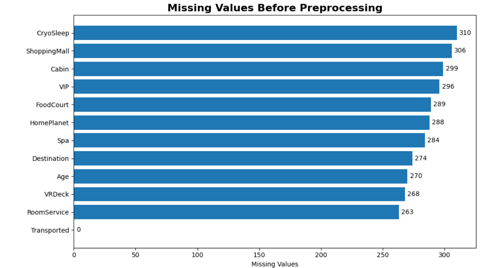
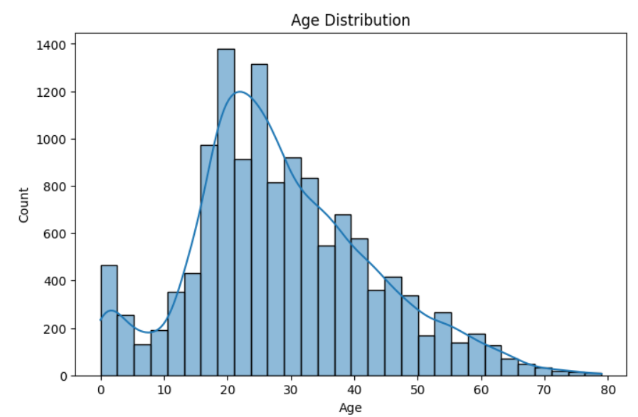
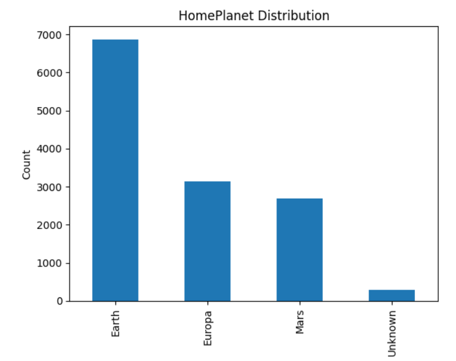
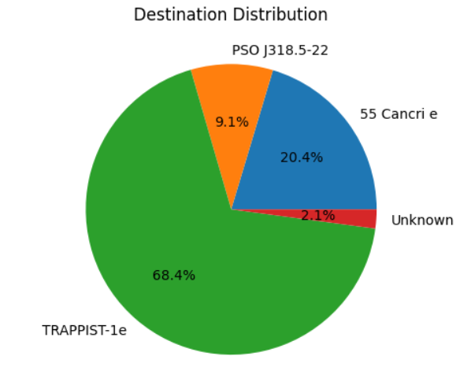
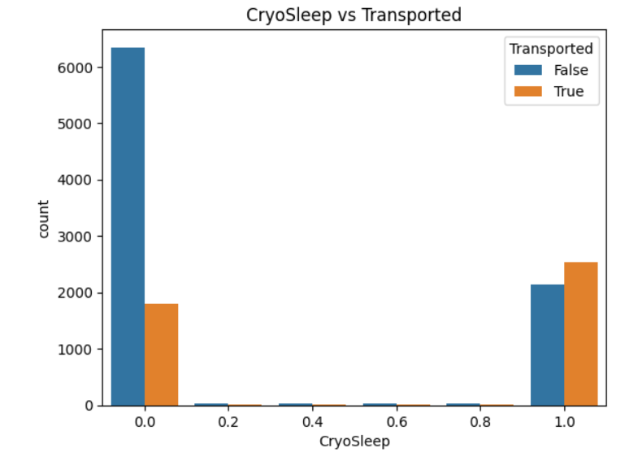
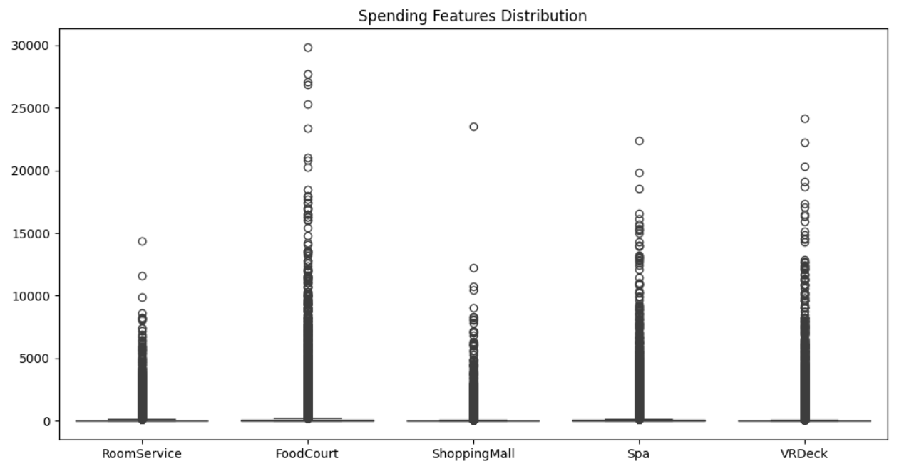
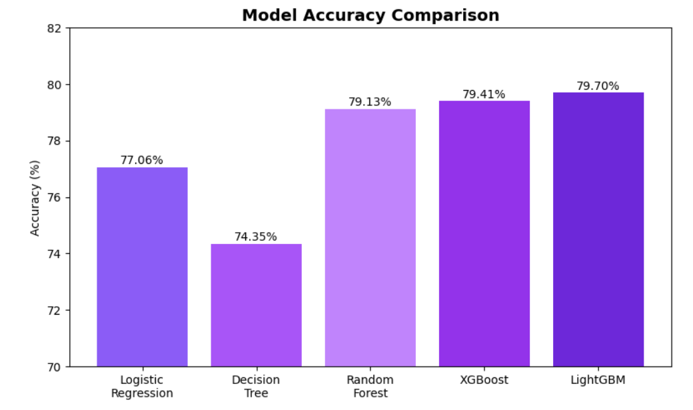

Name: Krupa Pattan
USN: 01FE25BCS721
Course: Machine Learning
Semester: 4
Department: Computer Science
The Spaceship Titanic project is a binary classification problem from Kaggle. The objective is to predict whether passengers were transported to another dimension after a spacetime anomaly.
This project implements a complete machine learning workflow involving data preprocessing, feature engineering, model training, evaluation, and prediction generation.
| Technology | Purpose |
|---|---|
| Python | Programming Language |
| Pandas | Data Manipulation |
| NumPy | Numerical Computation |
| Matplotlib | Data Visualization |
| Seaborn | Statistical Visualization |
| Scikit-Learn | Machine Learning Models |
| KNN Imputer | Missing Value Handling |
| XGBoost | Gradient Boosting Model |
| LightGBM | Final Prediction Model |
Predict whether a passenger was transported to another dimension using passenger information such as age, cabin details, spending patterns and destination.
Training Records
Test Records
Features
Classification
The dataset contains passenger information including demographic details, travel information and spending patterns. The target variable is Transported.
Before preprocessing, several features contained missing values. The highest missing values were observed in CryoSleep, ShoppingMall, Cabin, and VIP. To preserve information and avoid data loss, KNN Imputation was applied to estimate missing values based on similar passengers.

Dataset Collection
↓
Data Cleaning
↓
EDA
↓
Feature Engineering
↓
Encoding
↓
Model Training
↓
Evaluation
↓
Prediction
Machine Learning algorithms cannot effectively handle missing values, categorical variables, and inconsistent data formats directly. Preprocessing transforms raw data into a clean and structured format, improving model performance and prediction accuracy.
Training and testing datasets were merged before preprocessing to ensure consistent transformations across both datasets.
df = pd.concat([train, test])
Combining datasets ensures that feature engineering, encoding, and missing value handling are applied uniformly.
The Cabin feature contained multiple pieces of information in a single column. It was split into three separate features.
B/0/P
Deck = B Number = 0 Side = P
Cabin
↓
Split('/')
↓
Deck | Number | Side
This transformation provides more meaningful information to the model.
Several features contained missing values. Instead of removing records or replacing missing values with simple averages, KNN Imputation was used.
KNN Imputer
from sklearn.impute import KNNImputer imputer = KNNImputer()
Machine Learning algorithms require numerical inputs. Therefore, categorical features were converted into numerical representations using One-Hot Encoding.
HomePlanet Earth Europa Mars
After Encoding:
HomePlanet_Earth HomePlanet_Europa HomePlanet_Mars
pd.get_dummies()
This prevents the model from assuming an incorrect ordinal relationship between categories.
Raw Dataset
↓
Merge Train & Test
↓
Cabin Feature Extraction
↓
Missing Value Handling
(KNN Imputer)
↓
One-Hot Encoding
↓
Clean Dataset

Most passengers belong to young and middle-aged groups. The distribution indicates that the majority of travelers are between 20 and 40 years old.

Earth contributes the largest passenger population, followed by Europa and Mars.

Passenger destinations vary significantly, with some destinations attracting more travelers than others.

Passengers in CryoSleep show a significantly higher probability of being transported, indicating a strong relationship with the target variable.

Boxplots reveal the presence of outliers and distribution patterns across spending-related features. Most passengers exhibit low spending while a small group spends significantly more.
Feature Engineering is the process of creating meaningful features from existing data to improve machine learning model performance. Well-designed features help models discover hidden patterns and increase prediction accuracy.
The Cabin column contained multiple pieces of information in a single feature. It was split into three separate components.
B/123/P ↓ Deck = B Num = 123 Side = P
df[['Deck', 'Num', 'Side']] =
df['Cabin'].str.split('/', expand=True)
df = df.drop(columns=['Cabin'])
df['Deck'] = df['Deck'].fillna('U')
df['Num'] = df['Num'].fillna(-1)
df['Side'] = df['Side'].fillna('U')
Purpose: Extract more useful information from cabin data.
The extracted cabin features were converted into numerical values to make them suitable for machine learning algorithms.
df['Deck'] = df['Deck'].map({
'G':0,'F':1,'E':2,'D':3,
'C':4,'B':5,'A':6,
'U':7,'T':8
})
df['Side'] = df['Side'].map({
'U':-1,
'P':1,
'S':2
})
Purpose: Convert categorical cabin information into machine-readable numerical values.
Several features contained missing values. Instead of using mean or median replacement, KNN Imputer was used to estimate values based on similar passengers.
impute_lis = [ 'Age','VIP','Num', 'CryoSleep','Side','Deck', 'RoomService','FoodCourt', 'ShoppingMall','Spa','VRDeck' ] rest = list( set(df.columns) - set(impute_lis) )
imp = KNNImputer() df_imputed = imp.fit_transform( df[impute_lis] ) df_imputed = pd.DataFrame( df_imputed, columns=impute_lis )
Purpose: Preserve data relationships and reduce information loss.
Machine learning models require numerical inputs. Therefore, categorical features were converted into binary columns.
df['HomePlanet'] =
df['HomePlanet'].fillna('U')
df['Destination'] =
df['Destination'].fillna('U')
category_colls = [
'HomePlanet',
'Destination'
]
for col in category_colls:
df = pd.concat(
[
df,
pd.get_dummies(
df[col],
prefix=col
)
],
axis=1
)
HomePlanet Earth Europa Mars ↓ HomePlanet_Earth HomePlanet_Europa HomePlanet_Mars
Purpose: Prevents the model from assuming an incorrect order between categories.
Spending-related columns were combined to create richer representations of passenger behavior.
RoomService
+
FoodCourt
+
ShoppingMall
+
Spa
+
VRDeck
↓
Total Spending
Additional engineered features included:
Raw Dataset
↓
Cabin Splitting
↓
Deck & Side Encoding
↓
Missing Value Handling
(KNN Imputer)
↓
One-Hot Encoding
↓
Spending Features
↓
Final Dataset
Model Building is the process of training Machine Learning algorithms using prepared data so that the model can learn patterns and make accurate predictions on unseen data.
| Model | Purpose |
|---|---|
| Logistic Regression | Basic Classification Model |
| Decision Tree | Tree-Based Prediction |
| Random Forest | Ensemble Learning Method |
| XGBoost | Advanced Boosting Algorithm |
| LightGBM | Fast Gradient Boosting Model |
Preprocessed Dataset
↓
Train-Test Split
↓
Model Training
(Logistic Regression,
Decision Tree,
Random Forest,
XGBoost,
LightGBM)
↓
Performance Evaluation
↓
Best Model Selection
| Model | Accuracy |
|---|---|
| Logistic Regression | 77.06% |
| Decision Tree | 74.35% |
| Random Forest | 79.13% |
| XGBoost | 79.41% |
| LightGBM | 79.70% |

LightGBM achieved the highest accuracy of 79.70%, making it the best-performing model for the Spaceship Titanic prediction task.
The boosting-based models (XGBoost and LightGBM) outperformed traditional machine learning models, demonstrating their ability to capture complex relationships within the dataset.